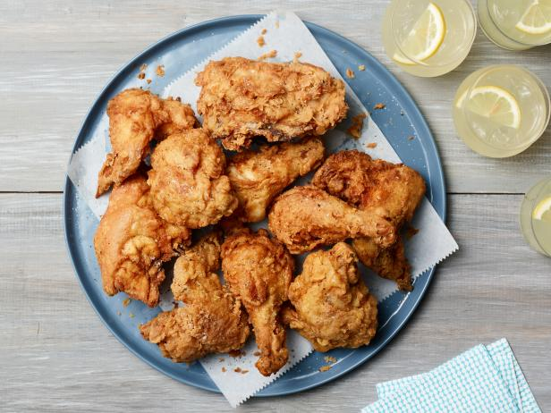

Recipe on how to create easy Fried Chicken
Overnight brined fried chicken that is easy and just as good as any resturant quality
Although frying at home may be discouraging, it is an easy and fun recipe to create at home
Needed ingredients
- 1 whole chicken
- Neutral oil such as peanut or canola
- Flour
- Buttermilk for the brine
- salt
- Hot sauce of choice
- pepper
- garlic powder
- cayaene pepper
- onion powder
Instructions
- Add half a cup of your hot sauce of choice into around a 4 cups of cold Buttermilk
- Mix mixture until nice and smooth
- Cut chicken up into 8 different pieces (you should end up with 2 of each of a breast, wings, drumpsticks and thighs
- Brine the chicken pieces atleast 4 hours up to a day for best results
- When ready, get 2 big plates or trays and fill each with around 3 cups of flour
- Season one flour station with the seasons listed above
- when ready, dip the wet chicken into the unseasoned flour then back into the butter milk mixture and finally, dipped into season flour mixture
- Set covered chicken aside and repeat for the rest of the pieces
- Heat your frying oil in a pan (we recommend a cast iron or a wok) and wait until frying oil is 325 degrees F
- slowly dip chicken into frying oil besure not to over crowd your pan
- Monitor your chicken and oil, for the breast please wait until internal temperatures reach 160 F while dark meat reaches 155 F
- Take chicken out and let rest for atleast 10 minutes
- Enjoy
Return to main page
Click here to return to top of page